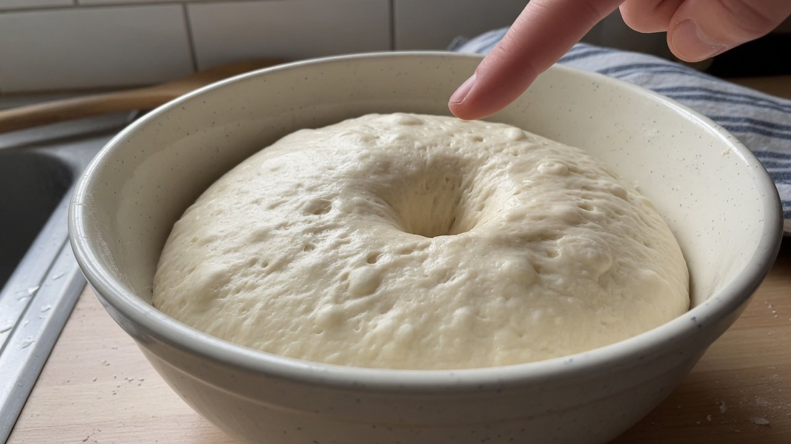
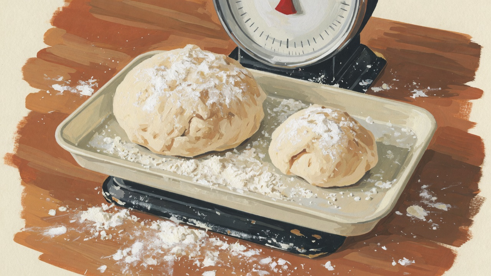
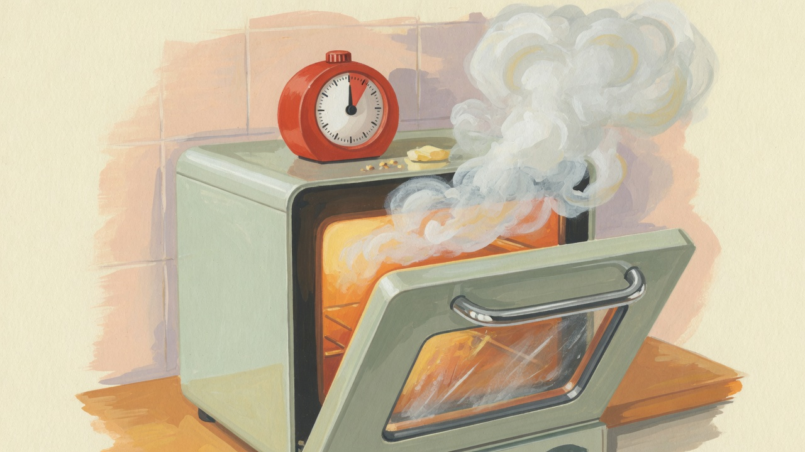
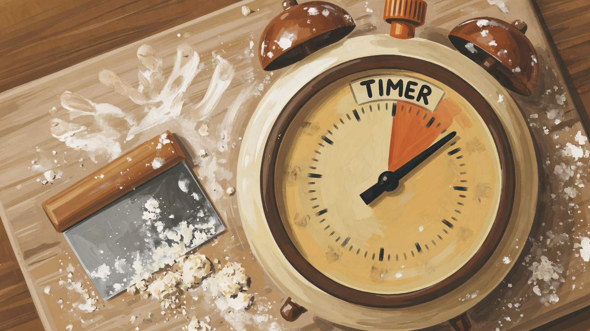

실기가 가장 오래 걸린 이유
제빵기능사 준비에서 저에게 가장 길었던 구간은 실기였습니다. 필기는 교재와 기출로 밀도를 올릴 수 있었지만, 실기는 손이 따라줘야 했습니다. 2024년 10월 첫 학원 수업에서 만든 식빵은 겉은 그을리고 속은 아직 덜 익은 상태였고, 강사님이 말씀하신 '반죽 종료 온도'가 왜 중요한지 그날 처음 체감했습니다.
이 글은 시험 품목을 나열하는 요약이 아닙니다. 제가 처음 망했던 순간과, 같은 실수를 줄이기 위해 반복한 연습 방식을 품목 구분 없이 공정 순서대로 적습니다. 시험 범위·품목명은 매년 바뀔 수 있으니, 최신 요강은 반드시 확인하세요. 저는 2024~2025 회차 기준으로 기록합니다.
반죽 — 계량은 맞는데 결과가 다른 날
초반 가장 많이 망한 구간은 반죽 종료 시점이었습니다. 저울로 재료는 맞췄는데, 반죽 온도가 날마다 달랐습니다. 겨울철(2024년 11~12월)에는 반죽이 차가워져 발효가 늦어지고, 봄(2025년 3월)에는 반대로 온도가 올라가 과반죽처럼 느껴지는 날이 있었습니다.

- 망한 현상: 반죽 표면이 일찍 갈라짐, 성형 후 늘어짐
- 당시 원인 추정: 물 온도·실내 온도를 같이 보지 않음 (확인: 온도계 도입 후 개선)
- 고친 것: 재료 온도 + 실내 온도 + 반죽 종료 온도를 한 줄 메모
메모 형식은 단순했습니다. '물 12°C / 실내 19°C / 반죽 종료 24°C / 발효 1차 50분'. 숫자가 맞다고 보장되는 공식은 아니지만, 같은 날 두 번째 반죽을 할 때 수정이 빨랐습니다. 감으로만 하던 날과 비교하면 차이가 분명했습니다.
학원 오븐과 집 오븐의 상화 온도 차가 10°C 가까이 났습니다. 학원에서 200°C로 맞춘 색이 집에서는 190°C에 가깝게 나와, 처음엔 '집에서만 망한다'고 느꼈습니다. 메모에 '학원 200 = 집 190'이라고 적은 뒤부터 비교가 쉬워졌습니다.
발효 — 시간만 보고 판단하던 실수
두 번째로 많이 망한 것은 발효 판단이었습니다. 레시피에 '1차 40분'이라고 적혀 있으면 그대로 성형에 들어갔는데, 겨울과 봄에서 같은 40분이 전혀 다른 결과를 냈습니다. 덜 발효된 채 굽으면 조직이 촘촘하고 뻑뻑했고, 과발효면 성형 후 오븐 들어가기 전에 이미 기포가 무너졌습니다.

학원에서 배운 기준은 '손가락 눌림 테스트'와 '부피 배율'이었습니다. 저는 여기에 반죽 표면 텐션을 같이 봤습니다. 표면이 너무 느슨하면 과발효 쪽, 너무 팽팽하고 늘어나지 않으면 덜 발효 쪽으로 조정했습니다.
성형 — 무게는 맞는데 모양이 흐트러질 때
시험 실기에서 체감 난이도가 높았던 것은 성형 후 크기·무게 편차였습니다. 한 덩어리는 500g에 가깝게 나왔는데, 다음은 470g대로 줄어 있었습니다. 강사님 피드백은 '같은 반죽이라도 성형 시 공기 빼기와 봉합이 다르면 무게가 달라진다'였습니다.

- 실패: 봉합이 약해 굽는 중 터짐
- 실패: 성형 후 과도한 밀대 사용 → 표면 막 손상
- 실패: 판에 놓은 뒤 2차 발효 전 위치를 옮겨 모양 붕괴
고친 방법은 성형 직후 저울에 한 번 더 올리기였습니다. 시험장에서도 가능한 수준의 습관이었고, 편차를 ±5g 안쪽으로 줄이는 데 가장 도움이 됐습니다. 속도가 느려지는 것 같아 불안했지만, 오히려 재작업 시간이 줄었습니다.
굽기 — 예열·스팀·시간, 세 가지가 동시에 어긋날 때
집 오븐과 학원 오븐의 차이는 예열 도달 시간에서 처음 드러났습니다. 집에서는 예열 표시등이 켜졌다고 바로 넣었는데 겉만 빨리 익었고, 학원 오븐은 스팀 분사 타이밍까지 맞춰야 했습니다. 초반에는 '온도만 맞추면 된다'고 생각했는데, 식빵류에서 스팀을 빼거나 늦게 넣은 날은 껍질 두께와 색이 달라졌습니다.

저는 굽기 구간에서 3분 간격 체크를 했습니다. 처음 10분은 색 변화, 중반은 팽창, 후반은 내부 익음 소리(탭 테스트)를 봤습니다. 오븐마다 다르지만, '이 오븐에서 이 품목은 몇 분에 색이 이렇게 변한다'는 기록이 쌓이면서 시험 당일 변동에 덜 흔들렸습니다.
시간 재기 — 맛보다 먼저 맞춘 것
2025년 3월부터는 맛·조직보다 제한 시간 안에 끝내기를 주 1회 의식적으로 연습했습니다. 타이머를 켜고 반죽 시작부터 완성까지 기록했습니다. 처음에는 10분 이상 초과했고, 약한 구간이 '성형 세부'와 '정리'에 몰려 있었습니다.

시간을 맞추려다 품질이 떨어지는 날도 있었습니다. 그때 배운 것은 단순화였습니다. 시험 범위 품목 중 가장 익숙한 루트만 고정하고, 장식·부가 단계에서 욕심을 뺐습니다. 합격 후 돌아보면 '예쁘게'보다 '끝내기'가 먼저였어야 했습니다.
시험 당일 타이머 소리가 커서 놀란 적이 있습니다. 평소엔 휴대폰 진동만 쓰다가, 모의 때 알람을 켜 두니 손이 멈췄습니다. 그다음부터는 모의할 때마다 시험장과 비슷하게 타이머를 켜 두었습니다.
반복 연습 — 새 레시피보다 같은 반죽을 다시
실기 실력이 오른 구간은 새 제품을 늘린 달이 아니라, 같은 반죽을 20번 넘게 반복한 달이었습니다. 2024년 12월~2025년 2월이 그랬습니다. 지루했지만, 반죽 종료 온도 1°C 차이가 결과에 어떻게 반영되는지 몸으로 알게 됐습니다.
반복할 때마다 바꾼 변수는 하나만 두었습니다. 물 온도만, 1차 발효만, 성형 봉합만 — 동시에 여러 개를 바꾸면 다음에 무엇이 효과였는지 알 수 없었습니다. 이 방식은 이후 빵 R&D에도 그대로 이어집니다.
실기 준비 중이라면
품목을 많이 만져 보고 싶은 마음은 이해됩니다. 저도 초반에 그랬습니다. 다만 시험 일정이 가까우면 범위 품목 안에서 반복 깊이가 우선이었습니다. 2편 8개월 로드맵의 중반 구간과 이 글을 함께 보면 일정 배치가 잡힙니다.
학원·집 오븐이 다르면 '같은 레시피'가 아니라 같은 공정 기록을 맞추는 쪽이 낫습니다. 다음 편은 필기에서 자주 틀리는 포인트입니다.
실전 적용 노트
실기 메모 양식은 A4 한 장이면 충분했습니다. 날짜, 품목, 물·실내·반죽 종료 온도, 1·2차 발효 시간, 성형 후 무게, 굽기 시간·색, 망한 점 한 줄. 이 정도만 있어도 한 달 뒤 다시 읽을 때 패턴이 보입니다.
손목·어깨 통증이 생기면 무리하게 하루 연습량을 늘리지 않았습니다. 2025년 4월에 하루 6시간 연습 후 다음 날 성형 속도가 떨어진 적이 있어, 이후 주 1회는 반죽만 가볍게 하는 날을 넣었습니다. 시험 직전 컨디션이 실기 점수에도 영향을 준다고 봅니다.
정리하며
실기는 하루 만에 늘지 않았습니다. 망한 날을 기록한 날이 쌓이면서, 같은 실수가 줄었습니다. 다른 환경에서 준비하신 분의 경험이 이 글과 다를 수 있습니다. 문의로 알려 주시면 확인 후 반영하겠습니다.
초보자가 자주 실수하는 포인트
- 재료 계량만 맞추고 반죽·실내 온도는 기록하지 않기
- 발효 시간을 레시피 그대로만 따르기
- 성형 후 무게 확인 없이 굽기 시작
- 시험 2주 전 새 품목·새 루틴 추가하기
체크리스트
- 반죽 메모 양식 한 장 만들기 (온도·시간·무게)
- 약한 공정 하나만 골라 2주 반복
- 주 1회 시간 재기 연습
- 4편 필기 글과 병행해 이론·손 균형 맞추기
자주 묻는 질문
- 집에서만 연습해도 실기에 도움이 되나요?
- 됩니다. 다만 오븐·습도 차이를 메모로 보완해야 합니다. 저는 학원에서 시험 환경에 가깝게 익히고, 집에서는 당일 복습용으로 썼습니다.
- 망한 빵도 기록해야 하나요?
- 저는 망한 날을 더 자세히 적었습니다. '왜'를 찾을 수 있는 날이 많았기 때문입니다. 사진 한 장과 메모 한 줄이면 충분합니다.
이 글은 운영자의 직접 경험을 바탕으로 작성되었으며, 오븐·재료·환경에 따라 결과는 달라질 수 있습니다. 식품 위생·알레르기 등 건강 관련 판단을 대체하지 않습니다.